X2446–X2520¶
Circle & Conic Intersections, Lemoine Inverses & Radical Centers I
X2446–X2520 (Circle & Conic Intersections, Lemoine Inverses & Radical Centers I) — 16 representative centers (from 75 in collection) constructed on acute reference triangle \((a, b, c) = (5, 6, 7)\) with unit baseline AB = \(1\).¶
Group Preamble — (Mostly) Circle-related Points, X2446 - X2573
Centers X2446 to X2573 were contributed by Peter J. C. Moses during October to November, 2003. See the notes just before X1662 for an introduction and notation.
Included in this section are centers of similitude of several pairs of circles. However, for some pairs of central circles, the two centers of similitudes are not triangle centers but are instead a pair of bicentric points. Specifically, Moses found that the insimilicenter (i.e., internal center of similitude) and exsimilicenter of the following pairs are bicentric points; as such they are listed in the Bicentric Pairs section (accessed by the Tables button atop this page):
The 2nd Brocard circle, defined in the aforementioned Bicentric Pairs, is mentioned several times [from X2554 to X2573]. A summary of its properties follows.
Definition: The 2nd Brocard circle is the circle having center X3 and radius eR, where e = (1 - 4 \(\sin^{2}\)ω)1/2 and R = circumradius. The 2nd Brocard circle and the Brocard circle meet in the 1st and 2nd Brocard points. Peter J. C. Moses found that the 2nd Brocard circle also passes through the points Xi for I = 1670, 1671, 2554, 2555, 2556, 2557. The square of the radius of the 2nd Brocard circle can be written out as
\(a^{2}\)\(b^{2}\)\(c^{2}(a^{4} + b^{4} + c ^{4} - b^{2}c^{2} - c^{2}a^{2} - a^{2}b^{2})\)/[4(\(b^{2}\)\(c^{2}\) + \(c^{2}\)\(a^{2}\) + \(a^{2}\)\(b^{2})\)(\(a^{2}\) + \(b^{2}\) + \(c^{2})\)]
Xi is the inverse-in-the-2nd-Brocard-circle of Xj for these (i,j): (6,39), (76,99), (1666,2563), (1667,2562), (1689,1690), (2026,2561), (2027,2560)
The power of the 2nd Brocard circle with respect to each of the vertices A, B, C is \(a^{2}\)\(b^{2}\)\(c^{2}\)/(\(b^{2}\)\(c^{2}\) + \(c^{2}\)\(a^{2}\) + \(a^{2}\)\(b^{2})\)
X24461st INTERSECTION(LINE X1X_3, INCIRCLE)
X24472nd INTERSECTION(LINE X1X_3, INCIRCLE)
X24481st INTERSECTION(LINE X1X_3, BEVAN CIRCLE)
X24492nd INTERSECTION(LINE X1X_3, BEVAN CIRCLE)
X2450INVERSE-IN-NINE-POINT-CIRCLE OF X1316

X2451INVERSE-IN-2nd-LEMOINE-CIRCLE OF X1316
X2452REFLECTION OF X1316 IN X6
X2453REFLECTION OF X6 IN X1316
X24541st INTERSECTION(EULER LINE, STEINERINELLIPSE)
X24552nd INTERSECTION(EULER LINE, STEINERINELLIPSE)
X2456INVERSE-IN-1st-LEMOINE CIRCLE OF X3

X2458INVERSE-IN-1st-LEMOINE CIRCLE OF X39
X2459INVERSE-IN-CIRCUMCIRCLE OF X371
X2460INVERSE-IN-CIRCUMCIRCLE OF X372

X2461INVERSE-IN-1st-LEMOINE-CIRCLE OF X371

X2462INVERSE-IN-1st-LEMOINE-CIRCLE OF X372
X2463INSIMILICENTER(ORTHOCENTROIDAL CIRCLE, INCIRCLE)
X2464EXSIMILICENTER(ORTHOCENTROIDAL CIRCLE, INCIRCLE)
X2465INSIMILICENTER(ORTHOCENTROIDAL CIRCLE, 2nd LEMOINE CIRCLE)
X2466EXSIMILICENTER(ORTHOCENTROIDAL CIRCLE, 2nd LEMOINE CIRCLE)
X2467INSIMILICENTER(ORTHOCENTROIDAL CIRCLE, SPIEKER CIRCLE)
X2468EXSIMILICENTER(ORTHOCENTROIDALCIRCLE, SPIEKER CIRCLE)
X2469INSIMILICENTER(ORTHOCENTROIDALCIRCLE, BROCARD CIRCLE)
X2470EXSIMILICENTER(ORTHOCENTROIDAL CIRCLE, BROCARD CIRCLE)
X2471INSIMILICENTER(ORTHOCENTROIDAL CIRCLE, 1st LEMOINE CIRCLE)
X2472EXSIMILICENTER(ORTHOCENTROIDAL CIRCLE, 1st LEMOINE CIRCLE)
X2473RADICAL CENTER OF {BROCARD CIRCLE, BEVAN CIRCLE, INCIRCLE}
X2474RADICAL CENTER OF {BROCARD, 2nd LEMOINE, (X4,2R)} CIRCLES
X2475ANTICOMPLEMENT OF X21
X2476INVERSE-IN-ORTHOCENTROIDAL-CIRCLE OF X21
X2477EXSIMILICENTER{INCIRCLE, SINE-TRIPLE-ANGLE CIRCLE}
X2478INVERSE-IN-ORTHOCENTROIDAL-CIRCLE OF X377
X24791st INTERSECTION(EULER LINE, STEINERCIRCUMELLIPSE)
X24802nd INTERSECTION(EULER LINE, STEINERCIRCUMELLIPSE)
X2481INTERSECTION(FEUERBACH HYPERBOLA, STEINER CIRCUMELLIPSE)
X2482STEINER-INELLIPSE-ANTIPODE OF X115
X2483RADICAL CENTER OF {CIRCUMCIRCLE, 1st LEMOINE CIRCLE, BEVAN CIRCLE}
X2484RADICAL CENTER OF {CIRCUMCIRCLE, 2nd LEMOINE CIRCLE, BEVAN CIRCLE}
X2485RADICAL CENTER OF {CIRCUMCIRCLE, 1ST LEMOINE CIRCLE, NINE-POINT CIRCLE}
X2486RADICAL CENTER OF {INCIRCLE, NINE-POINT CIRCLE, MOSES CIRCLE}

X2487RADICAL CENTER OF {INCIRCLE, SPIEKER CIRCLE, BEVAN CIRCLE}

X2488RADICAL CENTER OF {CIRCUMCIRCLE, INCIRCLE, BROCARD}
X2489RADICAL CENTER OF {CIRCUMCIRCLE, NINE-POINT-CIRCLE, 2ND LEMOINE CIRCLE}
X2491RADICAL CENTER OF {CIRCUMCIRCLE, NINE-POINT-CIRCLE, GALLATLY CIRCLE}
X2492RADICAL CENTER OF {CIRCUMCIRCLE,NINE-POINT-CIRCLE, MOSES CIRCLE}
X2493RADICAL CENTER OF {CIRCUMCIRCLE,NINE-POINT-CIRCLE, PARRY CIRCLE}
X2494RADICAL CENTER OF {CIRCUMCIRCLE, INCIRCLE, 1st LEMOINE CIRCLE}

X2498RADICAL CENTER OF {CIRCUMCIRCLE, INCIRCLE, MOSES CIRCLE}
X2501RADICAL CENTER OF {CIRCUMCIRCLE, NINE-POINT CIRCLE, TAYLOR CIRCLE}
X2502RADICAL CENTER OF {CIRCUMCIRCLE, BROCARD CIRCLE, PARRY CIRCLE}
X2503RADICAL CENTER OF {CIRCUMCIRCLE, PARRY CIRCLE, BEVAN CIRCLE}
X2505RADICAL CENTER OF {INCIRCLE, NINE-POINT CIRCLE, SPIEKER CIRCLE}
X2506RADICAL CENTER OF {NINE-POINT CIRCLE, 1st LEMOINE CIRCLE, 2nd LEMOINE CIRCLE}
X2507RADICAL CENTER OF {NINE-POINT CIRCLE, 1st LEMOINE CIRCLE, GALLATLY CIRCLE}
X2509RADICAL CENTER OF {NINE-POINT CIRCLE, 1st LEMOINE CIRCLE, APOLLONIUS CIRCLE}
X2512RADICAL CENTER OF {CIRCUMCIRCLE, APOLLONIUS CIRCLE, (X4,2R)}

X2513RADICAL CENTER OF {CIRCUMCIRCLE, GALLATLY CIRCLE, (X4,2R)}
X2514RADICAL CENTER OF {CIRCUMCIRCLE, 2nd LEMOINE CIRCLE, (X4,2R)}
X2515RADICAL CENTER OF {CIRCUMCIRCLE, BEVAN CIRCLE, 2nd BROCARD CIRCLE}
